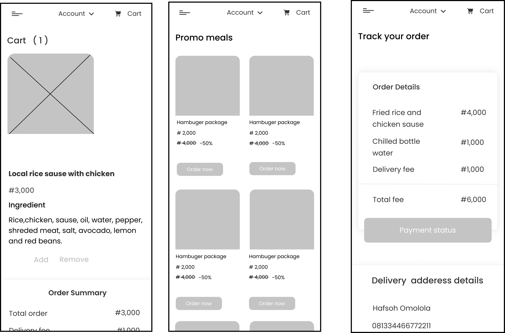

Revamp of Chicken Republic Website
With a warm and inviting ambiance, attentive service, and a commitment to quality, Chicken Republic creates an unforgettable experience that leaves users craving more.

Project Overview
Embarking on an exciting adventure, I set out to revamp the Chicken Republic website, an online platform that invites exploration, encourages sharing, and keeps visitors coming back for more. With a focus on enhancing both the design and user experience, I chose this restaurant website as a prime candidate for a transformative redesign for my employer. Join me on this journey as we breathe fresh life into Chicken Republic, creating a delightful online experience that exceeds expectations and leaves a lasting impact..
Design Goals & Objectives
As the lead designer, my role in the Chicken Republic website revamp was to envision and implement a captivating user interface that aligns with the brand's identity. I was responsible for conducting extensive user research, gathering insights, and translating them into intuitive design solutions. Collaborating closely with the development team, I ensured seamless integration of functionality and visual aesthetics, while also prioritizing usability and a delightful user experience. Through meticulous attention to detail and iterative design processes, my goal was to deliver a revitalized website that engages and delights visitors, ultimately driving business growth for Chicken Republic.
Problem Statement
The Chicken Republic website currently presents several challenges that hinder an optimal user experience. The existing design lacks consistency and cohesiveness, resulting in a disjointed visual experience for visitors. The user interface feels outdated and fails to engage users, leading to a lack of connection and inspiration. Navigation on the website is cumbersome, with information scattered and difficult to locate, causing frustration and a poor user journey. To address these issues, there is a need to revamp the Chicken Republic website, creating a seamless and intuitive user experience that captivates visitors and enhances their interaction with the brand.
- Problem #1: Inconsistent and outdated website design and user interface.
- Problem #2: Lack of intuitive navigation and clear information hierarchy.
- Problem #3: Limited online ordering and delivery options.
- Problem #4: Ineffective integration of social media platforms and customer engagement.
- Problem #5: Inadequate representation of the brand identity and values online..
- problem #6: Difficulty in finding relevant information about menu items, promotions, and locations.
Design Process
I dive into the depths of the design process to bring the vision of Chicken Republic's revamped website to life. With meticulous attention to detail and a passion for user-centric design, I craft an immersive experience that captures the essence of the brand. Through iterative ideation, prototyping, and testing, we ensure that every element resonates with users, making their interaction with Chicken Republic's online platform a delightful and memorable experience.

Competitive Analysis
Competitive Landscape: Unveiling the Market Dynamics
Unveiling the next phase of my design process,I conducted a thorough analysis of our competitors. I carefully studied their strengths and weaknesses, like expert detectives. Exploring the market further, I uncovered the secrets behind their success and noted the key elements that made them unique. Armed with this valuable knowledge, I developed a design strategy that would position Chicken Republic as a standout destination, offering an unforgettable experience to our customers.

User persona
Understanding the User: Creating Meaningful Personas
As I delved deeper into our design process, I wanted to understand our target audience on a personal level. I embarked on a journey to create user personas, crafting detailed profiles that captured the essence of our ideal customers. Through extensive research and empathy, I discovered their desires, preferences, and pain points. I brought these personas to life, giving them names, faces, and stories. This helped me develop a deeper understanding of our users, enabling me to design a website that would resonate with their needs and aspirations.

Unveiling User Insights: Mapping User Needs and Recommendations
After doing a detailed competitive analysis of 8 existing similar product, in other to sort and summarise my findings, I move on to do affinity mapping which involves grouping similar observations together into themes and give the reason for grouping them together, which will then be used to provide recommendation to stakeholders.
Design errors in the already existed website


Heuristic Evaluation
Heuristic Evaluation: Assessing User Experience and Identifying Usability Issues
Continuing my quest for an exceptional user experience, I proceeded from the insights gained through affinity mapping to conduct a heuristic evaluation of the Chicken Republic website. In this evaluation, I examined the website's interface and interactions against established usability principles to identify any potential usability issues. With a meticulous approach, I carefully scrutinized each element, navigation flow, and interaction, aiming to uncover areas for improvement. This evaluation process allowed me to assess the website's strengths and weaknesses, paving the way for informed design decisions and optimizations. By addressing these usability concerns, we aim to create a seamless and intuitive digital platform that enhances the overall user experience for Chicken Republic's customers.

Ideated Features & Corrections
- Correction #1: Color change with a more cooler one.
- Correction #2: Sign up and sign in options to enable more trust and security.
- Correction #3: A well detailed menu options for users to be able to choose variety, with some sort of interactive animation .
- Correction #4: Order summery for users to confirm order and delivery details option, they can also change their delivery settings
- Correction #5: Payment gateway to enable users pay for what they've ordered and complete the task successfully.
- Correction #6: Track order, users will have the opportunity to track their order and communicate with their delivery guy fro proper and smooth delivery of items purchased
- Correction #7: Proper typography, consistency and alignment.
User Flow
As I progressed in the design process for Chicken Republic, I recognized the importance of mapping out the user journey. User flows became our guiding compass, ensuring a clear and seamless navigation experience. By minimizing complexity and embracing interactive animations, I enhanced menu options and made exploration a delight. The user flow design reduced steps and presented information at the right time, creating an intuitive and efficient experience. Through this approach, I transformed the online platform into a well-guided journey, delivering a memorable and delightful dining experience.
Scenario 1
Chats and flow showing how a user will sign in and register on the website
Scenario 2
Chats and flow showing how a user will order for food in the menu on the website

Scenario 3
Chats and flow showing how a user will track their order on the website
Scenario 4
Chats and flow showing how a user will be able to view promo meals on the website
Scenario 5
Chats and flow showing how a user will be able to locate near by store on the website

Design Phase
Wireframing: Building the Blueprint for Success
In the design phase, I dive into the world of wireframing, where I lay the foundation for an exceptional user experience. Wireframes are like blueprints that outline the structure and functionality of the website, serving as a visual guide for the final design. By focusing on the layout, content placement, and navigation, I create a skeletal framework that captures the essence of the user journey. Through wireframing, I ensure that every element of the website aligns with the user's needs and goals, creating a seamless and intuitive experience from start to finish.

Hi-Fidelity
Designing the Delight: Crafting a Memorable User Experience
As I delved deeper into the design phase for Chicken Republic, my focus was on creating a visually appealing and engaging interface. I carefully selected colors, typography, and imagery that reflected the brand's personality and evoked a sense of appetite and excitement. From the enticing food visuals to the intuitive layout, every element was thoughtfully crafted to enhance the user experience. By employing principles of simplicity, consistency, and user-centered design, I aimed to create a design that not only captured attention but also facilitated seamless interactions. The result was a visually stunning and user-friendly design that brought the essence of Chicken Republic to life in the digital realm.

Design Mockups


Usability Testing
Testing and Iteration: Enhancing the User Experience through Rigorous Evaluation
Through carefully designed test scenarios, I observe how users navigate the interface, accomplish tasks, and uncover any usability issues or pain points. By observing and analyzing user behavior, I gain valuable insights into what works well and what can be improved. User testing allows me to refine and iterate on the design, ensuring that it meets user expectations and delivers a seamless and satisfying experience.

User Testing Summary
Positive Feedbacks
- Visually appealing design.
- Intuitive navigation.
- Clear and organized layout.
- Easy-to-understand instructions.
- Pleasant user experience.
Negative Feedbacks
- Some buttons were not clickable.
- The "signup" option was not easily accessible in the footer, requiring users to scroll up to find it.
- Suggestions for better button visibility and placement to improve user experience.
Corrections from Usability Testing
To address the issue of non-clickable buttons, we implemented proper button functionality and ensured a consistent and intuitive user interface throughout the website. Additionally, we moved the "signup" option to a more prominent location in the footer, eliminating the need for users to scroll up. Furthermore, we improved the visual cues and indicators for clickable elements, providing clear feedback to users and reducing confusion. We conducted a thorough review of button placement and design across all pages, ensuring consistency and improving user navigation. Lastly, we incorporated user feedback and suggestions to enhance button visibility and placement, resulting in a more seamless and user-friendly experience.
Style Guide

Let's Connect and Transform Your Product into a Business Goal !
@2023 Hafsoh Omotosho-Adeniran | Designed & Developed by Hafsoh Omotosho Legal Designer | Hafsohomotosho@gmail.com